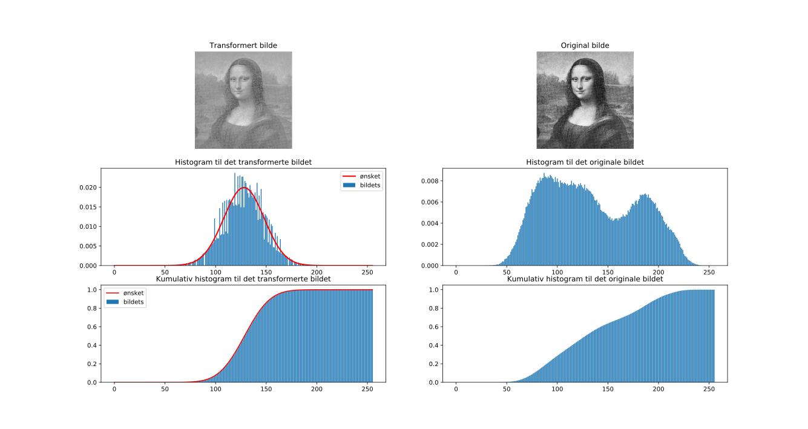

from scipy.misc import imread
import matplotlib.pyplot as plt
import numpy as np
"""
histogramtilpasning(img,q)
Histogramtilpasser et 8-bits innbilde img til histogram q
Argumenter:
* img: innbildet
* q: histogram innbildet (ideelt) skal få
Returnerer:
* Innbildet med histogram tilnærmet lik q
"""
def histogramtilpasning(img,q):
# Antar 8-bit
G = 256;
# Finn innbildets histogram og deretter dets kumulative histogram:
c = finn_histogram_bilde(img)[1]
# Finn det kumulative histogrammet til q:
cq = np.zeros(256)
cq[0] = q[0]
for i in range(1,256):
cq[i] = cq[i-1] + q[i]
# Transformér innbildet img:
T = np.zeros(G)
for i in range(G):
T[i] = np.argmin(np.abs(c[i] - cq))
return T[img.astype(int)] # T anvendes på hvert element i bildet img
"""
plot_histogramtilpasning(img,img_T,q)
Plotter innbildet img og det histogramtilpassede bildet img_T med bildenes histogram
og kumulative histogram.
Argumenter:
* img: Innbildet
* img_T: Det histogramtilpassede bildet
* q: Histogrammet som img er tilpasset til.
Returnerer:
Ingenting. Skal vise frem ett vindu.
"""
def plot_histogramtilpasning(img,img_T,q,save=False):
G = 256
intensiteter = np.linspace(0,G-1,G)
# Finn histogrammene til innbildet:
p,c = finn_histogram_bilde(img)
# Finn histogrammene til det histogramtilpassede bildet:
p_T,c_T = finn_histogram_bilde(img_T)
# Finn de kumulative histogrammene for plottingen sin del:
c_q = np.cumsum(q)
plt.figure()
plt.subplot(3,2,1)
plt.imshow(img_T,cmap='gray')
plt.title('Transformert bilde')
plt.axis('off')
plt.subplot(3,2,2)
plt.imshow(img,cmap='gray')
plt.title('Original bilde')
plt.axis('off')
plt.subplot(3,2,3)
plt.bar(intensiteter,p_T,edgecolor='none')
plt.title('Histogram til det transformerte bildet')
plt.plot(intensiteter,q,'r',linewidth=2)
plt.legend(['ønsket','bildets'])
plt.subplot(3,2,4)
plt.bar(intensiteter,p,edgecolor='none')
plt.title('Histogram til det originale bildet')
plt.subplot(3,2,5)
plt.bar(intensiteter,c_T,edgecolor='none')
plt.title('Kumulativ histogram til det transformerte bildet')
plt.plot(intensiteter,c_q,'r')
plt.legend(['ønsket','bildets'])
plt.subplot(3,2,6)
plt.bar(intensiteter,c,edgecolor='none')
plt.title('Kumulativ histogram til det originale bildet')
plt.show()
"""
finn_histogram_bilde(img)
Finner det det normaliserte og kumulative histogrammet til bildet img
Argumenter:
* img: Bildet som funksjonen skal finne histogrammene til.
Returnerer:
* p: Det normaliserte histogrammet.
* c: Det kumulative histogrammet.
"""
def finn_histogram_bilde(img):
p = np.array([np.sum(img.astype(int) == i) for i in range(256)])/img.size
c = np.cumsum(p)
return p,c
Koden kan lastes ned her.
Her er idéen bak algoritmen tatt direkte fra slide 14 i lysarket om histogrambaserte operasjoner.
For å sjekke om programmet faktisk utfører en histogramtilpasning, har det blitt skrevet et eksempelprogram:
from oppgave6 import *
# Definere en Gauss-histogram som eksempel.
# Mulig å også bruke:
# gauss = lambda x,mu,std: np.exp(-0.5*((x-mu)/std)**2)/np.sqrt(2*np.pi*std**2)
def gauss(x,mu,std):
return np.exp(-0.5*((x-mu)/std)**2)/np.sqrt(2*np.pi*std**2)
G = 256
intensiteter = np.linspace(0,G-1,G)
img = imread('mona.png',flatten=True)
# Spesifisér ønsket middelverdi og standardavvik til Gauss-en:
mu = float(input('Middelverdi = '))
std_ = float(input('Standardavvik = '))
q = gauss(intensiteter,mu,std_)
q /= np.sum(q) # For aa soerge for at histogrammet er normalisert
img_T = histogramtilpasning(img,q)
# For å sjekke om transformen gir et bilde med samme statiske egenskaper
# som den spesifiserte Gaussen:
print('\nSum av ønsket histogram: ',np.sum(q))
print('Middelverdi til transformert bilde: ',np.mean(img_T.flatten()))
print('Standardavvik til transformert bilde: ',np.std(img_T.flatten()))
plot_histogramtilpasning(img,img_T,q)
som kan lastes ned her.
Programmet tilpasser et gitt bilde, i dette tilfellet av Mona, til et Gaussisk histogram. Et Gaussisk histogram ble bare valgt som demonstrasjon, men det er fullt mulig å bruke andre former på det ønskede histogrammet.
Etter en kjøring av programmet med middelverdi = 128 og standardavvik = 20, blir resultatet slik:
Figure 1: Mona som har blitt histogramtilpasset en Gauss med middelverdi lik 128 og standardavvik på 20.

Programmet sjekker også om middelverdien og standardavviket i det transformerte bildet er omtrent lik middelverdien og standardavviket til Gauss-en:
Sum av ønsket histogram: 1.0
Middelverdi til transformert bilde: 127.767959595
Standardavvik til transformert bilde: 19.9696095787
Som en kan se, sjekker den også om det ønskede histogrammet er normalisert - altså summeres opp til én. Dette er en ganske viktig forutsetning for at transformen skal være så god som mulig!
from histogramtilpasning import *
# Definerer et uniformt histogram over G intensiteter.
# Mulig å også bruke:
# gauss = lambda G: np.ones(G)/G
def uniform(G):
return np.ones(G)/G
G = 256
intensiteter = np.linspace(0,G-1,G)
img = imread('mona.png',flatten=True)
# Spesifisér ønsket middelverdi og standardavvik til Gauss-en:
q = uniform(G)
q /= np.sum(q) # For aa soerge for at histogrammet er normalisert
img_T = histogramtilpasning(img,q)
plot_histogramtilpasning(img,img_T,q)
Programmet kan lastes ned her.
Det også er fullt mulig å løse denne oppgaven ved å direkte spesifisere hva uttrykket for det kumulative histogrammet er til et uniformt histogram. Uttrykket for det kumulative histogrammet vil bli $$ \begin{align*} c(j) &= \frac{T(j)}{G}\\ G \cdot c(j) &= T(j) \end{align*} $$ Dette betyr at den diskrete transformasjonen blir $$ T[j] = \text{round}((G-1)\cdot c[j]) $$ Da er det mulig å implementere dette uttrykket direkte for å finne transformasjonsarray-et til bildet. Dette er beskrevet mer detaljert på slide 8 i lysarket om histogrambaserte operasjoner.